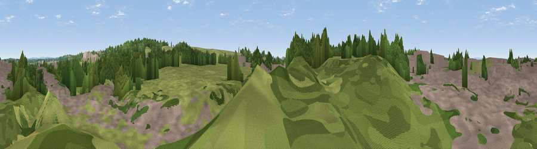

Viewpoint near Siston
#44585 in England · top 93% of its area beats it · near Siston · path 102 mWhere it is
The exact computed spot (ST 67381 76459). Click the marker for map links.
Public access: the nearest public right of way is about 102 m away — the final stretch may cross private land. Computed from Natural England's CRoW access layer and OpenStreetMap rights of way — not the legal definitive map. Always verify locally.
The view, rendered

A 360° render of this exact spot computed from the terrain model, tree cover and land cover — summer colours, afternoon light, calibrated against photographs of famous viewpoints. Real trees, hedges and buildings will differ in detail.
The panorama
Grey silhouette: terrain skyline in each direction (720 bearings, Earth curvature and refraction included). Dashed green: skyline with trees (+15 m) and buildings (+8 m) as obstacles. Blue strip: how far the ground is visible on each bearing.
Where the view opens
Wedge length = distance to the farthest visible ground on that bearing (vegetation-aware). Rings at 10, 25 and 50 km.
What fills the view
39% grassland · 33% woodland · 27% built-up ·
Angular shares of the visible panorama (visual magnitude), not map area. Landscape diversity 0.49 (0–1 Shannon).
Key numbers
More beautiful places nearby
The staircase of upgrades: each row has a higher view potential than everything closer. Driving times are estimates from straight-line distance, calibrated against real road routing — check an actual route before setting out.
| Place | Direction | Drive | Score |
|---|---|---|---|
| Viewpoint near Wick | SSE · 4 km | ~9 min | 39.4 |
| Viewpoint near North Common | SSE · 5 km | ~10 min | 48.8 |
| Viewpoint near Oldland Common | S · 6 km | ~12 min | 49.0 |
| Viewpoint near Cadbury Heath | SSW · 6 km | ~12 min | 54.0 |
| Viewpoint near Hinton | E · 7 km | ~14 min | 57.2 |
| Viewpoint near Upton Cheyney | SSE · 7 km | ~14 min | 62.1 |
| Viewpoint near Doynton | ESE · 7 km | ~14 min | 62.9 |
| Viewpoint near Beach | SSE · 7 km | ~15 min | 72.5 |
51.48614, -2.47117 · source: osm viewpoint · position refined by local search. Computed location — check access rights before visiting.